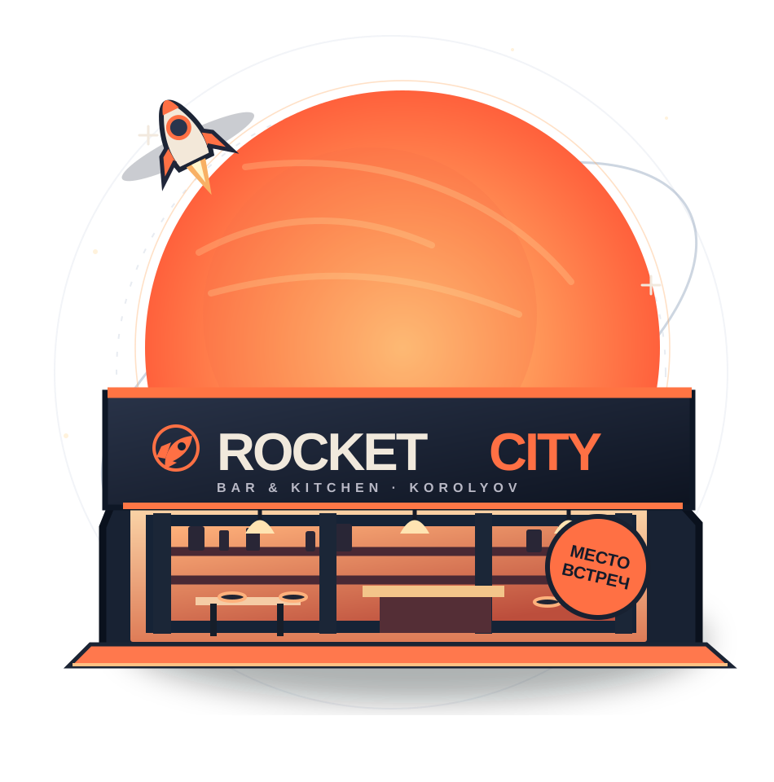
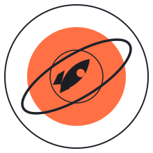
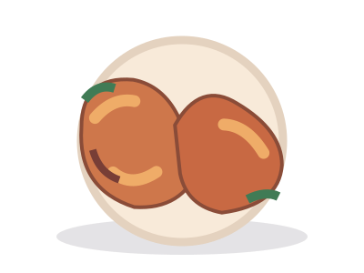
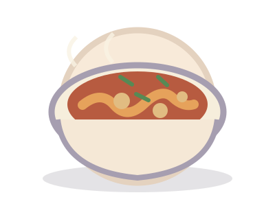
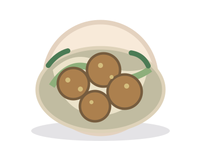

01 / ГОРЯЧЕЕ
Бургеры
В том числе вишнёвый бургер, который хвалят гости.
НЕ ОБЯЗАТЕЛЬНО ЛЕТЕТЬ ДАЛЕКО, ЧТОБЫ ХОРОШО ПРОВЕСТИ ВРЕМЯ.
Rocket City — фирменный бар в Королёве. Бургеры, рёбра, закуски и место, где просто приятно быть вместе.

КОСМИЧЕСКИЙ ГОРОД. ЗЕМНОЕ МЕСТО ВСТРЕЧИ.

Без сложных поводов и лишнего официоза. Здесь можно собраться своей компанией, заказать любимую еду и провести вечер в своём ритме.
Почувствовать атмосферуНа кухне Rocket City — бургеры, мясные блюда и закуски. Ниже — позиции, которые отмечают гости и сама пивоварня.
В том числе вишнёвый бургер, который хвалят гости.

Мясное блюдо, которое часто вспоминают в отзывах.

Знакомая классика для компании.
Фри и по-деревенски — любимые гарниры гостей.

Солянка и щи — по отзывам постоянных гостей.

Варианты без мяса в меню Rocket City.

Уютный зал, неформальная обстановка и пространство для встреч. Здесь не обязательно планировать особенный вечер — достаточно прийти.
Бронируйте стол и приходите. Мы на Подмосковной, 7, в Королёве.
+7 (901) 725-09-17